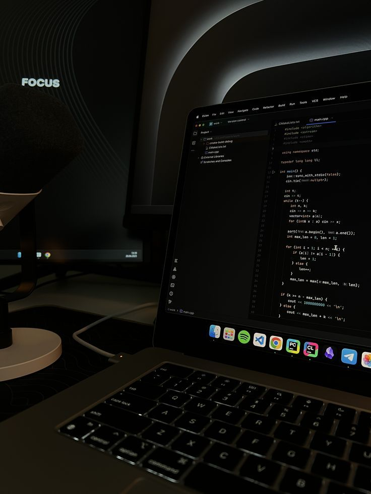

Meet Sanele
I build practical digital experiences for businesses.
I am Sanele Mazibuko, a software developer based in Tembisa, Gauteng. Through Saniweb, I help South African businesses create websites, digital systems, and client workflows that look professional and stay useful after launch.

How I Work
Business-first design, clean development, and support after launch.
I focus on websites that explain the business clearly, guide visitors toward contact, and work properly on mobile. When a client needs more than a brochure site, I also build simple backend systems like enquiry capture, admin updates, and project progress portals.
- Website design and development
- Business systems and portals
- Website management and improvements
- Remote work across South Africa
Positioning
Digital development for South African businesses.
Saniweb is built for small businesses, startups, professional services, and growing teams that need to look more established online without unnecessary complexity.